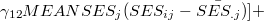

| 階層的線形モデルによるデータ分析の実際 — HLM6，SAS，Rを利用して — |
| 階層的線形モデルによるデータ分析の実際 — HLM6，SAS，Rを利用して — |
階層的線形モデルは，何もHLM6を用いてしか分析できないというわけではない。 1 基本的に階層的線形モデルは線形混合モデルと考えることができるので，線形混合モデルを扱えるソフトウェアであれば階層的線形モデルによる分析を行うことができる。
ここでは，SASにおいて混合モデルを扱うためのMIXEDプロシジャを用いて階層的線形モデルによる分析を行う方法について簡単に説明する。
SAS PROC MIXEDでは，HLM6とモデル式の表し方が若干異なる。
 |
(7) | |||
 |
 |
(8) | ||
|
 |
(9) | ||
|
 | (10) | ||
|
(11) |
となる。 このうち，最初の[ ]内は固定効果であり，2番目の[ ]内は変量効果である。 HLM6ではレベルごとに分けた式を入力できたのに対し，SAS（およびこの後で触れるR）においては，すべてのレベルを統合したモデル式(11)をもとに固定効果と変量効果の部分を分けて記述することになる。 SAS PROC MIXEDを用いた階層的モデルの分析方法について，詳しくは，Singer(1998)を参照されたい。
以下に，HSBデータを用いてHLM6を用いて行ったのと同じ分析をするためのプログラムの一例とその結果の出力を示した。
Footnotes
| 階層的線形モデルによるデータ分析の実際 — HLM6，SAS，Rを利用して — |